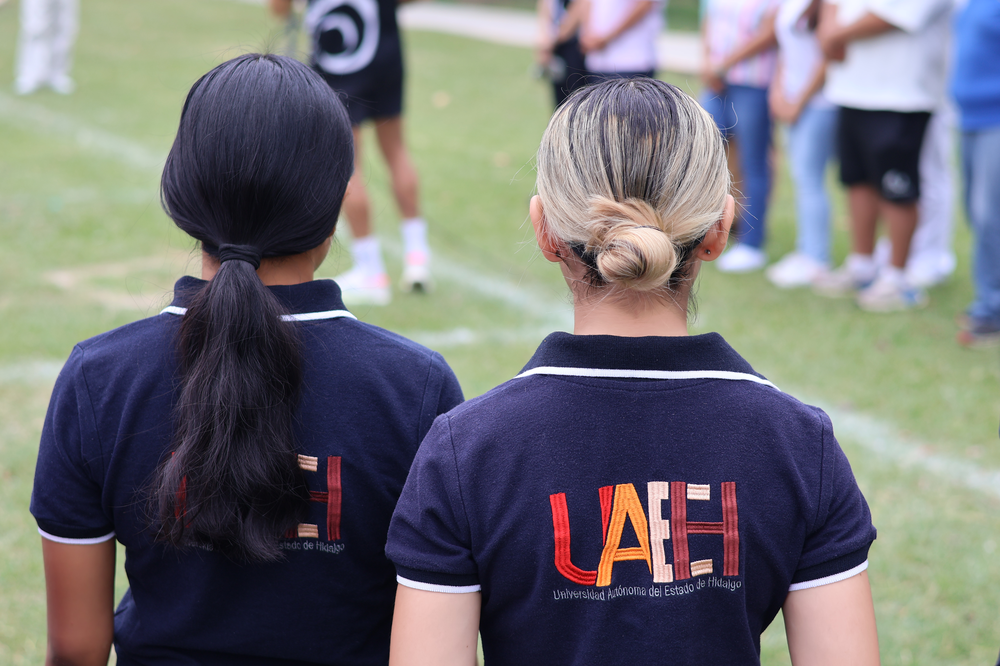

La Revista Universitaria de las Huastecas nace como un espacio de expresión, identidad y participación estudiantil dentro de la Escuela Superior de Huejutla.
Inspirada en el talento, la creatividad y la voz de las y los estudiantes, RUH representa una nueva forma de conectar a la comunidad universitaria mediante contenidos académicos, culturales, deportivos y sociales.

La Revista Universitaria de las Huastecas es el órgano oficial de comunicación y expresión de la Sociedad de Alumnos de la ESHu. Se constituye como un espacio plural, dinámico y participativo creado para la comunidad estudiantil, donde se difunden actividades académicas, culturales, deportivas y sociales que fortalecen la vida universitaria.
A diferencia de los medios científicos tradicionales, RUH promueve la libre expresión, el intercambio de ideas y la difusión del talento universitario, consolidándose como un vínculo directo entre la representación estudiantil y la comunidad de la Escuela Superior de Huejutla.
Nuestro propósito es fortalecer la identidad institucional, impulsar el sentido de pertenencia y construir una comunidad universitaria más conectada, participativa y representativa.

RUH tiene el compromiso de servir como un canal de expresión para las y los estudiantes, promoviendo sus ideas, talentos y aportaciones mediante contenidos de calidad.
La revista busca fortalecer la participación estudiantil y difundir iniciativas académicas, culturales y sociales que contribuyan al desarrollo de una comunidad universitaria más unida, participativa y comprometida con su entorno.
A través de una narrativa contemporánea y un enfoque editorial dinámico, buscamos acercar la información universitaria a las nuevas generaciones de manera auténtica e inspiradora.

La Revista Universitaria de las Huastecas busca consolidarse como un medio digital y editorial en constante evolución, capaz de adaptarse a las nuevas tendencias de comunicación y generar contenidos que inspiren, informen y fortalezcan el sentido de pertenencia de las futuras generaciones universitarias.
Aspiramos a destacar por nuestro impacto en la promoción de la cultura, el liderazgo y la identidad universitaria dentro de la región Huasteca.
Queremos convertirnos en una plataforma donde las voces estudiantiles encuentren un espacio auténtico para expresarse, colaborar y construir comunidad.
Creada por estudiantes. Inspirada en la comunidad. Construida para las futuras generaciones universitarias.